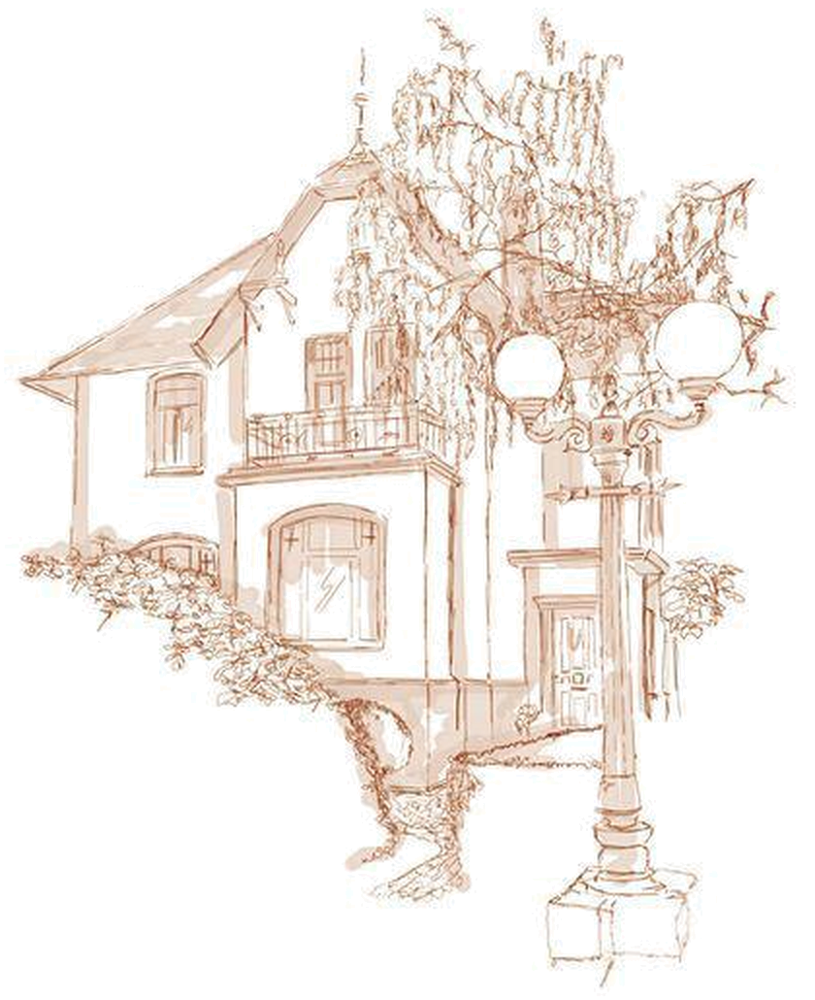

Weihnachts-Messe
Sonntag, 22. November 2026|11 bis 17 Uhr

Wir freuen uns sehr, dass Sabine Finne uns erneut ihre wunderschönen Räume zur Verfügung stellt.
Lasst euch inspirieren und genießt einen stimmungsvollen Tag voller Kreativität und vorweihnachtlicher Magie!
Es freuen sich auf Euch:
-
Christina Bartheidel
Genähtes – Bunte Schönigkeiten aus Stoff wie Kissen, Taschen und zauberhafte Weihnachtsdeko
-
Doreen thom Suden
SteinLiebeDesign – Hand gefertigte Dekoartikel aus Keraflott, die mit viel Liebe entstehen und jedem Raum ein besonderes Strahlen verleihen.
-
Hilde Fröhlich
Gaumenfreude – Ausgezeichnetes griechisches Olivenöl bringt mediterrane Lebensfreude auf den Tisch – Regionale Wildwurst sorgt für herzhaften Genuss.
-
Kerstin Hohmann
stine-Design – Für alles, was mit darf. Taschen, Täschchen und kleine Lieblingsstücke. Handgefertigt, durchdacht und mit ganz viel Liebe zum Detail.
-
Maren Maitra
Maitras Papierkram – Buchbindearbeiten. Schönes für Büro und Schreibtisch, handgearbeitet.
-
Nicole Willmanns
nw-pur – Liebevolle Papierwaren, Adventskalender, Kalender und besticktes Halbleinen. Kleine Kostbarkeiten zum Verschenken, Behalten und Freude schenken.